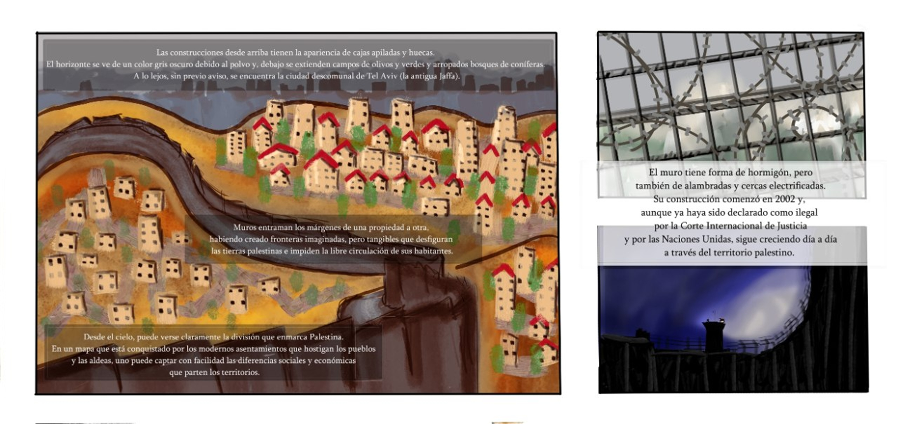
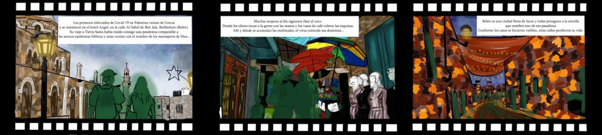

Las construcciones desde arriba tienen la apariencia de cajas apiladas y huecas. El horizonte se ve de un color gris oscuro debido al polvo y, debajo se extienden campos de olivos y verdes y arropados bosques de coníferas. A lo lejos, sin previo aviso, se encuentra la ciudad descomunal de Tel Aviv, la antigua Jaffa.
Desde el cielo, puede verse claramente la división que enmarca Palestina. En un mapa que está conquistado por los modernos asentamientos que hostigan los pueblos y las aldeas, uno puede captar con facilidad las diferencias sociales y económicas que parten los territorios. Las casas más restauradas, inspiradas en lo europeo u ornamentadas con tejados de dos aguas, irrumpen una realidad más antigua.
Los nuevos habitantes son extraños. El gobierno israelí les concede facilidades y bajos precios para que puedan instalar sus colonias en territorio usurpado. En las zonas más altas desde donde se vigila el mundo, los colonos viven donde ya no crecen los olivos. Ahora solo hay árboles foráneos fingiendo llevar allí más tiempo que los verdaderos dueños de sus tierras.
Muros entraman los márgenes de una propiedad a otra, habiendo creado fronteras imaginadas, pero tangibles que desfiguran las tierras palestinas e impiden la libre circulación de sus habitantes. Esta arquitectura tiene un recorrido de más de 600 kilómetros y su ruta aisla ciudades y pueblos, despedaza terrenos e irrumpe propiedades, imposibilitando, en muchas ocasiones, que la población palestina pueda acceder a servicios esenciales o provocando retrasos de varias horas.
La construcción impide a muchos propietarios entrar a sus tierras, y a otros acceder a recursos para cuidarlas. Los pozos están al otro lado del muro y tanto estos como otros recursos hidráulicos permanecen bajo el control israelí y forman parte de su política de apropiación de bienes según Pérez, (2023).
El muro tiene forma de hormigón, pero también de alambradas y cercas electrificadas. Su construcción comenzó en 2002 y, aunque ya haya sido declarado como ilegal por la Corte Internacional de Justicia y por las Naciones Unidas, sigue creciendo día a día a través del territorio palestino. Su presencia no es únicamente una limitación física, sino como afirma el artículo de Menéndez (2009), un recordatorio simbólico y constante de la imposición israelí.
Las distancias cobran significados diferentes según si eres parte del pueblo palestino o de la ciudadanía israelí. En otras palabras, para trasladarte desde el aeropuerto de Ben Gurion en Tel Aviv hasta la ciudad de Jerusalén, la capital de Israel según reconoció Trump en 2017 y demandada como capital de Palestina también, existe un tren directo que recorre 42 kilómetros sin obstáculos o barreras.
Mientras que la distancia entre Al-Walaja, una localidad cercana, hasta la misma Jerusalén es solo diez minutos en coche desde una carretera israelí. Está tan próxima que desde la parte alta del poblado pueden distinguirse los edificios de la ciudad y, sin embargo, muchos palestinos jamás pisarán sus calles, incluso aunque sus casas estén situadas en territorio oficialmente considerado como jerosolimitano.
Ocurre lo mismo en Al-E'izariya y Jabal Al-Baba, dos pueblos situados al otro lado de Jerusalén, el muro ha partido zonas por la mitad devorando terreno que ya era propiedad de alguien palestino. Miembros de la familia que vivían unos en frente de otros, ahora necesitan una hora de coche y un permiso especial para poder volver a tocarse.
Bodour Hassam es una activista e investigadora palestina experta en el conflicto y defensora de los derechos de la mujer. Ella afirma: «Cuando la gente pierde su tierra, no solo pierde su casa, pierde su identidad». Lo que genera vacíos generacionales inabarcables. El trauma de la ocupación es un trauma colectivo. Todo palestino o palestina conoce de manera más o menos cercana el abuso y ha perdido con ello gran parte de sus raíces familiares.
La repartición de terrenos, los puestos de avanzada y de control armados y todas esas licencias burocráticas que forman parte de la cotidianidad de los habitantes del país, han generado distancias entre las familias. El hogar puede pasar a ser un lugar inaccesible para quien se le ha retirado el permiso para volver a casa.
La Covid-19 dotó de un nuevo significado a los espacios de Palestina. Encerrando a la población en sus casas, imponiéndoles medidas abusivas y condenándolos entre la falta de medios médicos y vacunas. Ha habido 703.228 casos positivos confirmados, de ellos 5.708 personas palestinas han muerto a causa de la Covid-19 según el Palestinian Central Bureau of Statistics (PCBS) (2023).
Las consecuencias para el personal trabajador palestino también han sido muy graves, viéndose la población refugiada como un sector especialmente vulnerable por sus condiciones físicas y económicas. Según un informe de la Organización de las Naciones Unidas (2020) más de la mitad de los y las refugiadas palestinas habían caído en la pobreza tras la pandemia.

Leer texto de las viñetas
Panel superior: «Las construcciones desde arriba tienen la apariencia de cajas apiladas y huecas. El horizonte se ve de un color gris oscuro debido al polvo y, debajo se extienden campos de olivos y verdes y arropados bosques de coníferas. A lo lejos, sin previo aviso, se encuentra la ciudad descomunal de Tel Aviv (la antigua Jaffa).»
Panel central: «Muros entraman los márgenes de una propiedad a otra, habiendo creado fronteras imaginadas, pero tangibles que desfiguran las tierras palestinas e impiden la libre circulación de sus habitantes.»
Panel inferior izquierdo: «Desde el cielo, puede verse claramente la división que enmarca Palestina. En un mapa que está conquistado por los modernos asentamientos que hostigan los pueblos y las aldeas, uno puede captar con facilidad las diferencias sociales y económicas que parten los territorios.»
Panel derecho (El muro): «El muro tiene forma de hormigón, pero también de alambradas y cercas electrificadas. Su construcción comenzó en 2002 y, aunque ya haya sido declarado como ilegal por la Corte Internacional de Justicia y por las Naciones Unidas, sigue creciendo día a día a través del territorio palestino.»
Un país fragmentado
Palestina es un país fragmentado. Su territorio está dividido por dos zonas, Cisjordania y la Franja de Gaza. Para cruzar de uno hasta el otro hace falta cubrir 93 kilómetros que forman parte del Estado de Israel. La región de la Franja de Gaza está cercada por todas sus fronteras. La rodea un enorme muro, no se puede sobrevolar y sus aguas son vigiladas sin pausa. Viven en medio de un conflicto armado. La gobierna Hamas, una organización considerada como terrorista por la Unión Europea, Estados Unidos y otros países, que llegó al poder a través de las elecciones de 2006.
En lo que concierne al otro territorio ocupado, Cisjordania está siendo acorralada. Su ciudadanía es expulsada de sus tierras y asediada por asentamientos, en los cuales los colonos utilizan la violencia para impulsar a la gente a abandonar sus casas. Mahmud Zwareh es un activista palestino de Al-Masara, que se manifiesta habitualmente contra los asentamientos y asegura que se llegan a contar cerca de 850.000 colonos. Por otro lado, el Palestinian Central Bureau of Statistics (PCBS) estima que en 2021 ya había hasta 657.747 colonos.
Esta política es una forma de anexión de territorios que sucede desde el interior y que tiene como consecuencias la creación de fracturas que dividen la sociedad palestina y aíslan su población. Dividido en trozos e invadido desde dentro, los espacios entendidos como palestinos son cada vez piezas más pequeñas de un puzzle fraccionado. Su control militar y civil se restringe a la zona A, la menor, que ocupa únicamente un 18% del territorio.
Mientras que la zona B con un control civil es palestino, es dirigida militarmente a través de una conciliación palestino-israelí. Esta negociación está influenciada por la relación de subordinación de poder de Israel a Palestina y es el 22% de la superficie. Y por último, está la zona C, totalmente controlada por los israelíes que abarca el 60% de Cisjordania.
Palestina ha sido expoliada de quienes la habitaban, han arrancado de sus hogares y convertido en refugiados a 5,9 millones de personas según la Organización de Naciones Unidas (ONU). Cerca de 190.000 viven en los campos de refugiados de Cisjordania y Jerusalén Oriental, según indicaba para fecha del 04 de julio de 2023, la Organización de la Liberación Palestina en el Departamento de Asuntos de la Negociación.
Como consecuencia, la fragmentación despedaza en unidades aisladas a la población palestina, que ve dificultades para encontrarse unos con los otros a través de todo el laberinto de obstáculos que es creado por el estado de Israel. La disposición del territorio separa parte de un país por decenas de kilómetros, construye un muro entre localidades, expulsa a millones de sus habitantes a campos de refugiados e impide la circulación a través de controles armados.
Esta política tiene como resultado según indica Rodríguez (2019), múltiples impedimentos en la calidad de vida de la población palestina como la pérdida de su trabajo o su vivienda, que afectan en la unión del pueblo, lo cual dificulta su resistencia y por lo tanto, su supervivencia.
Por otro lado, la fragmentación no funciona solo a través de la separación física, sino también a través de la disposición de diferentes modos de vida que pretenden limitar la organización de movimientos colectivos de resistencia. Por un lado, el funcionamiento de la zona A, B y C y por otro los sistemas característicos impuestos según si se trata de una ciudad grande, un poblado o un campo de refugiados. Al mismo tiempo, debido a las características de hostigamiento, desarrollo histórico o modos de vida, se han propiciado idiosincrasias propias para cada lugar. Entendiendo esta realidad, Palestina se une en un solo objetivo común: Acabar con la ocupación.
Las mujeres
Manal Tamimi no recuerda cuando empezó a resistir. Quizá porque lo ha hecho desde siempre. «Yo nací en una familia luchadora. Mis tíos fueron exiliados a Jordania, muchos de mis familiares fueron asesinados por la ocupación, incluido mi padre (…) Cuando tú ves eso, tú no piensas sobre lo que tienes que hacer o no, solamente sigues los pasos de tu familia», afirma la defensora de derechos humanos.
Manal Tamimi es una mujer nacida en Nabi Saleh y ha estado manifestándose toda su vida contra la ocupación, también es activista. Dentro de Palestina, uno no puede vivir separado de la política. No tiene esa elección. La vive todos los días, por ejemplo cada vez que tenga que cruzar un puesto de control y un o una soldado con un fusil le pida los papeles.
Tamimi también es madre, pero su papel no solo se restringe a su rol de cuidadora, en otras palabras las mujeres no son solo el reflejo que los roles tradicionales le designan; sino todo lo necesario que tenga que hacerse para imponerse en contra del sistema de apartheid que les oprime. «No recuerdo exactamente cuando tomé la decisión o si simplemente pasó. Pero definitivamente si yo hubiera tenido elección, habría elegido resistir».
Tanto Amnistía Internacional como Naciones Unidas o el Observatorio de Derechos Humanos consideran que Israel está cometiendo apartheid contra Palestina. Para entender el concepto de apartheid, Amnistía Internacional (2022) defiende que esta separación se ejecuta cuando «se comete una violación grave contra los derechos humanos en el contexto de un régimen institucionalizado de opresión y dominación sistemáticas de un grupo racial sobre otro con la intención de mantener ese sistema». Así queda recogido también en la Convención Internacional sobre la Represión y el Castigo del Crimen de Apartheid y en el Estatuto de Roma.
La realidad de las mujeres palestinas está atravesada por la situación de apartheid y crece enzarzada a una sociedad patriarcal que se sostiene en la división de roles de género tradicionales. Así se analizaba ya en 2019 en un informe de Urrutia (2019) que sostiene que las dinámicas de ocupación aumentan las ya existentes desigualdades de género y generan vulnerabilidades específicas para las mujeres.
Por otro lado, cuando las familias están expuestas a vivir situaciones de violación de derechos debido al abuso sistemático del Estado de Israel, estas políticas y ejercicios componen una realidad de violencia explícita que es reproducida en los lugares más íntimos de sus vidas. Es decir, como explica Andrade, Alvis, Jiménez, Redondo y Rodríguez (2017) en situaciones de conflicto, las personas tienden a crear relaciones de amigo-enemigo en las cuales se legitiman los actos degradantes con los colectivos excluidos ya existentes, por esta razón, la violencia contra las mujeres aumenta.
Como consecuencia, según informan los datos del Palestinian Central Bureau of Statistics (PCBS) (2020) en 2019 un 59,3% de las mujeres habían sufrido violencia por parte de sus maridos, de este porcentaje el 18,5% era violencia física y el 9,4% violencia sexual. Dicho de otra manera, en ese año, más de la mitad de las mujeres casadas habían sido violentadas de alguna forma por su cónyuge.
Otro de los elementos que refuerza la situación de vulnerabilidad de las mujeres es la disposición de la ley en caso de matrimonio y divorcio. Las autoridades legales de estos asuntos son llevadas por los tribunales religiosos, lo que se traduce en que para obtener el divorcio, la mujer necesita el consentimiento del hombre o la renuncia a todos sus derechos, esto incluye la custodia de sus hijos. «Muchos hombres utilizan esto como un arma para forzar a las mujeres a mantener un matrimonio abusivo» afirma Bodour Hassam.
Dentro de la problemática de los casos de violencia de género dentro de las relaciones de pareja, existe todavía la preocupación por los matrimonios infantiles. Cada vez es menor, pero en 2022, el 2.75% de estos matrimonios fueron con menores de edad y en 2021 el 0,8% con jóvenes de 14 años o menos según el Palestinian Central Bureau of Statistics (PCBS) (2023).
La actuación tradicional dentro del patriarcado de la mujer como cuidadora tendría unos rasgos especiales en cuanto se analiza en el contexto de ocupación, arrestos indiscriminados y torturas. Según Urrutia (2019). Hassam detalla que el trabajo en casa es enteramente llevado por las mujeres, y que eso no significa que ellas no sean participantes de las tareas remuneradas, sino que también son responsables del cuidado de los hijos, del cuidado de su casa y de trabajar fuera para contribuir a la economía familiar.
La investigadora afirma de la siguiente manera: «Cuidar del hogar es siempre difícil pero cuando hablamos de contextos de demoliciones de casas, desalojo forzoso o el de las mujeres campesinas que no tienen recursos, acceso al agua o la electricidad… Es muy estresante».
Según el Palestinian Central Bureau of Statistics (PCBS) (2023), en 2020 la tasa de fecundidad estaba en 3,8% de hijos por mujer. La carga del cuidado maternal no es solo física, sino también mental. Lo que se traduce en que las madres palestinas no solo se tienen que encargar de que sus casi 4 hijos vayan al colegio o lleven una alimentación equilibrada; sino también de que estos no sean detenidos, torturados o asesinados.
Tamimi conoce: «Cuando tus hijos van a la escuela, tú no sabes si ellos van a volver o no». En muchas ocasiones, los niños son detenidos cuando van a clase o de vuelta a su casa. Sus mochilas se quedan tiradas en la calle mientras se los llevan esposados. En otras ocasiones, son asesinados. Abed al-Rahman Shadi Obeidallah era del campo de refugiados Aida y tenía trece años. Su vida acabó tras que un soldado israelí le disparara, aún cargaba su mochila del colegio.
Por todas las circunstancias que van a verse obligados a vivir durante su infancia, esta madre afirma que: «Bajo de la ocupación tú no solo tienes que criar a tus hijos, tú tienes que formar niños fuertes». Para ello, la activista entrena a sus niños para que estén preparados ante estas situaciones. Sabe que con la palabra de un soldado que declare que alguno de sus hijos ha tirado piedras, este podría pasar desde 10 a 20 años en la cárcel.
Según el Palestinian Central Bureau of Statistics (PCBS) (2023), la cifra de niños que fueron arrestados y trasladados a una cárcel israelí en 2022 fue de 150, además de 53 niños que fueron asesinados por la ocupación durante este mismo periodo. La activista les enseña audios reales grabados en interrogatorios, les trae abogados que puedan explicarles sobre derecho y les habla sobre las diferentes formas de interrogatorio. Incluso, los simula: «Nosotros tenemos que sujetarles, vendarles los ojos y llevarlos a una habitación, donde hay una grabación de un duro interrogatorio. Entonces, ellos gritan».
Para Tamimi, pasar por este procedimiento es algo imprescindible ya que es todo lo que puede hacer para preparar a sus hijos ante la realidad. «No importa cuanto quieras hacer por proteger a tus hijos, cuánto quieras hacer por ponerlos a salvo; bajo la ocupación en cualquier momento puede pasar algo». A esa edad, considera que debería estar enseñándoles a jugar al fútbol, al baloncesto o a disfrutar de cualquier otro pasatiempo. No instruirlos en caso de interrogatorio, gas lacrimógeno dentro de sus casas o primeros auxilios.
Para hablar de la relevancia de la mujer en la sociedad hay que comprender la importancia de las familias, y concretamente la importancia de las mujeres en Palestina. Diversos estudios como el de Morande (1999) demuestran la importancia de la familia como núcleo de la unión de la sociedad y cómo componente vital en la creación de la identidad tanto individual como colectiva, a través de la transferencia de la cultura.
Así Malé (2021, p15) afirma que: «La familia ha sido la institución que más ha contribuido a la identidad comunitaria palestina». Cuando se habla de la mujer como la base de la familia palestina, se está afirmando que ellas sostienen el principal colectivo de resistencia establecido desde el pueblo dentro del conflicto. Se ratifica su importancia como miembros activos de la sociedad que permiten la continuidad de la identidad y la cultura palestina, y luchan por existir bajo la ocupación israelí.
Las mujeres también son organizadoras y participan en las manifestaciones, y en todas las posibles formas de resistencia no violenta. El pueblo donde nació Manal Tamimi, Nabi Saleh, lo conforma una única familia, la suya. Y es conocido por manifestarse todos los viernes contra las violaciones a sus derechos por parte de las fuerzas de la ocupación israelí. Ahed Tamimi aún era una niña de once años cuando transcendió a los medios internacionales por enfrentarse de una forma evidente a los soldados, pasó varios meses en la cárcel y recientemente ha vuelto a ser detenida en noviembre de 2023.
Como ella, hay otras mujeres. En Nabi Saleh, los organizadores son cuatro mujeres y cinco hombres. Y sufren graves consecuencias por esto, la activista conoce a doce mujeres que han sido arrestadas. En 2022, arrestaron a 172 mujeres y otras 18 fueron asesinadas por la ocupación durante ese mismo año.
Entendiendo la coyuntura de sus vidas, los roles y necesidades específicas de las mujeres en Palestina conforman la orientación de sus movimientos. Bodour Hassam como reivindicadora de los derechos de las mujeres, insiste en que: «Las mujeres internacionales podéis escuchar, intercambiar experiencias sin juzgar y sin tratar de explicarnos. Entender que las circunstancias son diferentes y hacer una solidaridad horizontal».
Kate Khair es una miembro de un grupo de jóvenes palestinos que se organizan para encontrar su rol en la sociedad y su manera de resistir. En su trayectoria, se ha encontrado con distintos tipos de iniciativas. Algunos movimientos feministas que ella conoce están financiados por otros países y observa que se dejan llevar por esos contextos internacionales. Esto provoca que no tengan en cuenta la autonomía de las personas, cayendo en tópicos de paternalismo y en perspectivas colonialistas y xenófobas. Tiene muy claro que: «Para conseguir la libertad de las mujeres, es necesaria la libertad política y la libertad de la sociedad».
Otros movimientos son impulsados con el fin de obtener ingresos económicos en contextos en los que eso es realmente difícil. Al-Walaja es un poblado en el área C al lado de Belén y está rodeado por asentamientos. Algunas mujeres han formado un grupo de carpintería para poder mejorar su situación. Lubna Abualteen es una de sus organizadoras y comenta: «Todos nuestros materiales eran reciclados por lo que además era una empresa buena para el medio ambiente».
Su taller huele a resina y a madera recién cortada. Hay serrín en las estanterías y descansando en el suelo, debajo de las potentes máquinas. Handalas cuelgan de los tablones, junto a las llaves y otros símbolos de la resistencia como banderas talladas que pueden utilizarse de decoración. Encima de las mesas, hay juguetes para niños construidos con sus manos.
«Muchos de los hombres no creían que fuéramos capaces de utilizar máquinas tan peligrosas» comenta Abualteen. Pero ahora les plantean sus dudas sobre los procedimientos a seguir, además enseñan a otras comunidades su funcionamiento y con ello, contribuyen a la independencia económica de mujeres en Belén, Beit Sahur, Ramala o Gaza.
Cada mujer tiene su forma de existir bajo la ocupación, como indica Khair: «Las necesidades actuales de las mujeres son vivir en sociedades libres y democráticas, la misma participación, responsabilidad y derechos». Hassam insiste: «La necesidad más urgente de las mujeres palestinas es el fin de la ocupación».
Un sistema sanitario por pedazos
Abdel Fattah al Charif tenía 21 años cuando Elor Azaria, un soldado israelí, lo remató de un tiro a quemarropa cuando yacía herido de gravedad en el suelo, completamente vulnerable. Una grabación muestra cómo aún movía su cabeza y sus extremidades. Aún respiraba y varias ambulancias pasaban por su lado sin prestarle atención. Sus prioridades eran los soldados.
El sistema sanitario palestino está inexorablemente influenciado por la situación política y económica del país. Esto provoca que las interferencias en el auxilio médico de sus habitantes no sean solo de falta de recursos, sino que también la vida de las personas dependa de los obstáculos impuestos por las fuerzas de la ocupación. Así queda recogido en un artículo de Barghouthi y Giacaman (1993) en el que además se muestra que el dominio militar israelí ha producido un deterioro en el servicio de salud.
Las ambulancias pueden ser detenidas de camino a una emergencia. También, los puntos de control pueden suponer un retraso en el recorrido al hospital, ya que pueden estar cerrados o en ellos puede existir la obligación de cambiar de vehículo por uno que tenga la licencia israeli. Todos estos obstáculos pueden suponer la diferencia entre la vida y la muerte.
Según el informe de la Organización Mundial de la Salud (OMS) (2022), el 94% de los desplazamientos de ambulancias registrados por la Sociedad de la Media Luna Roja, Palestina a Jerusalén oriental desde el resto de la Ribera Occidental tuvo que someterse al procedimiento de tener que transferir a los pacientes de una ambulancia palestina a una israelí.
Najic Nassar es un médico de Beit Sahur, un pueblo al lado de Belén, y aunque ahora está retirado, ha estado trabajando en su oficina durante muchos años. Narra que una vez has pasado todas estas barreras, si es que lo consigues, hay cuatro vías médicas posibles. La primera es el sistema gubernamental de salud, también tienes el apoyo médico de la Agencia de Naciones Unidas para los Refugiados de Palestina en Oriente Próximo (UNRWA), la atención de las Organizaciones no gubernamentales o alguna clínica privada.
Los servicios del sistema sanitario ofrecido por las autoridades palestinas son deficientes afirma el médico, ya que su financiación depende de una economía que obtuvo una tasa de crecimiento producto interno bruto (PIB) en 2020 de -13,40% según el Palestinian Central Bureau of Statistics (PCBS) (2021). Además de una importante dependencia internacional, según un informe de la Organización Mundial de la Salud (OMS) (2022), el 12% de los gastos públicos en sanidad en ese año provenían de donaciones. El resultado es un estándar muy bajo y un número de recursos insuficiente para afrontar situaciones de crisis, como puede ser una escalada de violencia o una pandemia.
Un ejemplo de esto es que cualquier operación seria es realizada a través de la sanidad privada, y sin embargo, la pandemia de la Covid-19 debía ser atendida por el sistema público porque era un asunto nacional. Y por encima de esto, Israel como estado ocupante tenía la responsabilidad de todas las personas de este territorio en este tipo de catástrofe, así quedó recogido en los acuerdos de Ginebra.
Dicha consideración no fue tomada durante la pandemia. Mientras según Kershner (2021) Israel era el líder mundial de la vacunación contra la Covid-19. Al mismo tiempo, estaba siendo acusado por Amnistía Internacional de negar las vacunas a Palestina y presionado por las Naciones Unidas para que asistiera a esta necesidad. Los ciudadanos palestinos no comenzaron a vacunarse hasta marzo y cuando lo hicieron, recibieron una gran cantidad de vacunas que iban a caducar.
Nassar aún trabajaba durante la Covid-19 y vió que: «Yo sé que, no recuerdo el número exacto, pero cerca de 20.000 vacunas que estaban caducadas fueron entregadas por el gobierno israeli». Los puestos de vacunación estaban colocados de forma discriminatoria. Mahmud Zwareh podía ver que ubicaron algunos en las entradas de los asentamientos porque «ellos no querían parar la economía de Israel que depende de los trabajadores palestinos y quizá nosotros podíamos interactuar con ellos y que el coronavirus se esparciera en los dos lados».
El resultado fue un número de vacunados mucho más bajo. La tasa de vacunación de España actualmente está en un 87,2% según el artículo de RTVE (2023) la de Palestina está en un 36,6% según la Oficina de Información Diplomática del Ministerio de Asuntos Exteriores, Unión Europea y Cooperación (2023).
El origen de la enfermedad: La ciudad sagrada de Belén
Los primeros infectados de la Covid-19 en Palestina venían de Grecia y se instalaron en el hotel Angel, calle Al-Sahel de Beit Jala, Bethlehem (Belén). Su viaje a Tierra Santa había traído consigo una pandemia comparable a las atroces epidemias bíblicas y estas venían con el nombre de los mensajeros de Dios.
El 6 de marzo de 2020, un par de horas después de las primeras señales, personas de todos los hoteles de alrededor cayeron enfermas. No tenían test, pero lo tenían claro, la sintomatología de problemas respiratorios, fiebre y tos, y el nivel de contagio permitían identificar la enfermedad. Se trataba de la Covid-19.
Las primeras medidas de aislamiento no tardaron en surgir y las personas confinadas en los hoteles cuando se asomaban a sus ventanas, podían ver cómo muchedumbres se aglomeraban para solidarizarse con ellas. Sin entender todavía que la enfermedad no era algo a lo que pudieran enfrentarse a través de la fuerza.
Los trabajadores y trabajadoras de los hoteles volvían a sus casas y contagiaban a sus familias. Muchas mujeres al día siguiente iban al zoco. Un lugar atravesado por puestos de verduras, frutas y carne. Donde los niños llevan un carrito de supermercado con el que ayudan a llevar la compra a los transeúntes por un módico precio. Donde los olores tocan a la gente con las manos y los vasos de café cubren las esquinas. Allí y dónde se acumulan las multitudes, el virus extiende sus dominios.
Belén es una ciudad llena de luces y todas persiguen a la estrella que nombra uno de sus pasadizos. El entramado de las calles pierde el simbolismo habitual y se enrosca hacia todas partes. Las tiendas se acumulan a los lados de las cuestas y los coches se pegan tanto a las casas, que apenas existen las aceras. La vida se multiplica entre los pitidos de los coches, que suceden por cualquier razón desde el saludo a la prisa, y por todas las conversaciones entre quienes se conocen, y entre quienes no se han visto nunca.

Leer texto de las viñetas
Viñeta 1 (El Hotel Angel): «Los primeros infectados de Covid-19 en Palestina venían de Grecia y se instalaron en el hotel Angel, en la calle Al-Sahel de Beit Jala, Bethlehem (Belén). Su viaje a Tierra Santa había traído consigo una pandemia comparable a las atroces epidemias bíblicas y estas venían con el nombre de los mensajeros de Dios…»
Viñeta 2 (El Zoco): «Muchas mujeres al día siguiente iban al zoco. Donde los olores tocan a la gente con las manos y los vasos de café cubren las esquinas. Allí y dónde se acumulan las multitudes, el virus extiende sus dominios…»
Viñeta 3 (Calles vacías de Belén): «Belén es una ciudad llena de luces y todas persiguen a la estrella que nombra uno de sus pasadizos. Conforme los casos se hicieron visibles, estas calles perdieron su vida.»
Conforme los casos se hicieron visibles, estas calles perdieron esa vida. Comenzó el confinamiento. La gente estaba obligada a permanecer en sus casas, se cerraron carreteras y se aumentó la seguridad en los puestos de avanzada y de control, donde el ejército aprovechaba la situación para dominar a la población.
Esta imposibilidad se convirtió inmediatamente en un obstáculo para el trabajo. Según Who Profits (2020), un centro de investigación independiente que se dedica a explicar el papel del sector privado en la economía bajo la ocupación israelí, al mes siguiente unos 453.000 palestinos ya habían perdido su empleo y siendo las mujeres uno de los colectivos más vulnerables, estas circunstancias las expuso a vivir en la pobreza. Durante este año, un 54% de las mujeres habían vivido situaciones de violencia económica según el Palestinian Central Bureau of Statistics (PCBS) (2021).
Las universidades y colegios también permanecían cerrados, la educación paró de golpe y aunque casi mes y medio después, se retomó de forma online, esto afectó a la población estudiante. El Palestinian Central Bureau of Statistics (PCBS) (2023) computa que el 83% de las personas en Cisjordania tienen acceso a Internet, sin embargo, la disponibilidad de aparatos electrónicos era limitada y la preparación para las clases online también.
La situación sanitaria de las ciudades era compleja, utilizando como ejemplo a Belén, la localidad contaba con un solo hospital público. Podían sumarse a él dos hospitales privados con únicamente dos respiradores cada uno. En cuanto a los test, según agrega Kate Khair, residente de Belén: «Yo podía acceder al test de la Covid-19 en los laboratorios de Belén. Pero tenía que pagar dinero. En el sistema público no tenía que pagar, pero había un solo departamento para toda la ciudad».
Para poder atender a todas las personas que estaban enfermando también adecuaron un hotel y el centro de rehabilitación de los toxicómanos. Nassar desde su oficina en Beit Sahur podía apreciar que: «En Palestina, apenas tenemos expertos, unos cuantos en el hospital gubernamental de Belén y a uno dalo por eliminado», afirmaba sobre la situación clínica de la ciudad.
El resto de ciudades en Cisjordania subsistían en circunstancias parecidas. Los mejores hospitales estaban en Jerusalén pues pertenecen al sistema sanitario israelí que está en mejores condiciones, pero no todos los palestinos tienen permiso para ser trasladados allí. Según el Informe de la Organización Mundial de la Salud (OMS) (2022) solo los que pertenezcan a la ciudad pueden acceder al seguro nacional de salud israelí.
Hebrón es el paralelismo perfecto para entender las dinámicas de ocupación del país. Es una ciudad que está siendo devorada desde dentro, cuenta con varios asentamientos que irrumpen sus calles y paralizan su circulación a través de puntos de control. No es la primera vez que un ciudadano es asesinado en sus puertas.
Las tiendas de su casco antiguo están rodeadas por dependencias militares. Es necesario construir redes en el zoco por los objetos que son arrojados por los colonos. Y el acoso, la falta de ventas y la inestable situación política han acabado con muchos establecimientos. Hay demasiadas puertas cerradas en su mercado. Estas circunstancias han condicionado enormemente la economía de la ciudad, limitando sus bienes y afectando inexorablemente a los recursos sanitarios y educativos. El porcentaje de pobreza de esta ciudad en 2017 según Palestinian Central Bureau of Statistics (PCBS) (2018) estaba en un 20,3%, el segundo más alto de Cisjordania.
Hebrón se convirtió en el epicentro de la enfermedad. Médicos sin fronteras (2022) lo publicaba en un artículo, en el cúal también denunciaba el poco acceso médico de sus habitantes, ya que tanto el miedo a ser atacados como el cierre de sus puntos de control afectaba a que la gente decidiera o no acudir a un centro médico, esto perjudicaba especialmente a las mujeres, que además en muchas ocasiones necesitan un seguimiento de su estado si se quedan embarazadas y no pueden recibirlo.
De forma generalizada, la situación de la mujer se veía perjudicada. Durante los dos años que duró la pandemia, vieron severamente afectada su rutina. Hassam describe: «Muchas familias han utilizado la Covid-19 para no dejar a las mujeres salir de su casa. Para muchas chicas estudiar en la universidad era la única oportunidad que tenían para dejar la casa unas horas. (...) No podían tomar el aire o vivir una vida fuera del control cotidiano del padre o del esposo, eso afectó a la libertad de circulación de las mujeres dramáticamente».
La violencia de género se multiplicó durante los primeros meses. Este aumento está motivado por varios factores. Por una parte, ha habido un incremento de la violencia hacia las mujeres en todo el mundo, esto suele ocurrir en situaciones de crisis como así lo deja claro el artículo de la Organización de las Naciones Unidas en el ámbito de las mujeres (UN, Women) (2020).
Pero también, como indicaba Maram Zatara en la entrevista de la Coordinadora de Organización no gubernamental (ONG) para el Desarrollo (2020), la realidad de aislamiento durante la Covid-19, la pérdida de ingresos y la imposibilidad de muchas víctimas de acceder a recursos, pues algunos grupos de apoyo y tribunales de justicia se vieron incapacitados en su funcionamiento durante la pandemia ha contribuido al incremento de esa violencia. Como resultado, durante los primeros meses el 55% de las mujeres sufrieron violencia psicológica dentro de sus casas.
Las consecuencias de la Covid-19 para las mujeres en los campos de refugiados: El hacinamiento del campo Aida
El campo de refugiados Aida se encuentra al norte de Belén y empezó siendo, como todos los campamentos de refugiados, un conjunto de tiendas temporales. Las personas que vivían atestadas en su interior pasaron meses con medios insuficientes, mientras pensaban que volverían a casa, atrapados en el tiempo entre la certeza del desastre que les había llevado hasta esa situación y con la incertidumbre de conocer qué vida les esperaba después.
El Palestinian Central Bureau of Statistics (PCBS) (2020) calcula que el 42% de la población palestina son refugiados y según la Agencia de Naciones Unidas para la población refugiada de Palestina en Oriente Próximo (UNRWA) (2023), los refugiados más antiguos del mundo. El 39% de estas personas tienen menos de 15 años y el 23% están bajo la pobreza extrema. En total esta asociación mantiene 19 campos de refugiados actualmente.
Las viviendas, construidas tras el choque con la realidad de que no iban a poder recuperar pronto sus hogares, crecen hacia arriba en conjunto al aumento de la familia. Las generaciones se reparten los edificios y consumen el mismo aire que consumieron sus abuelos, las circunstancias no cambian y sus miembros parecen poder tocarse a través de las ventanas.
En las azoteas de todos las construcciones, se puede ver el muro y la torre de control. La gente está expuesta a constante vigilancia y al abuso de quien un día puede decidir que tus pertenencias ya no son tuyas. Los recursos de los que disponen los campos de refugiados son limitados y el nivel de desempleo es más del doble del español, con un 31,5% en 2020 según el Palestinian Central Bureau of Statistics (PCBS) (2021). En consecuencia, el estatus de refugiado restringe enormemente tus condiciones de vida y de futuro.
La Covid-19 abre las fauces ante la falta de salubridad que sostiene sus caminos de tierra. Y se traga a todo a quien encuentra hacinado debajo el alumbrado que se balancea en sus cielos. La distancia social es una medida para privilegiados en un lugar donde la intimidad ha perdido su nombre. Y el acceso a los alimentos, que ya estaba comprometido, se ve estirado hasta la extenuación. Un 57% de las personas refugiadas entrevistadas por la Agencia de Naciones Unidas para la población refugiada de Palestina en Oriente Próximo (UNRWA) (2020) afirmaba tener preocupación por no obtener los suficientes ingresos para comprar comida durante la pandemia.
Um Ahed es psicóloga en el Aida Youth Center, una organización fundada en 1968 con la intención de ayudar a la comunidad local, especialmente niños y jóvenes. Ahed detalla que las mujeres en el campo crearon grupos para proveer a sus familias de alimento. Por un lado, preparaban pan todos los días en el horno, pero también salían durante una o dos horas por semana para obtener todo lo necesario para sus casas, sus hijos y los recursos domésticos contra la Covid-19 (guantes, materiales de limpieza…).
La carga doméstica de las mujeres aumentó considerablemente durante la pandemia. Ellas debían encargarse de la completa desinfección del hogar, de preparar una habitación especial de aislamiento y de cuidar a las personas que cayeran enfermas. «Las mujeres tenían la responsabilidad de la limpieza de sus casas frente al virus. Limpiaban la puerta, las mascotas, el ordenador, lo que viniera de la tienda… Cada pequeña cosa que entrara a su hogar».
Se agregaba a esto que sus hijos no podían ir a clase y debían acompañarles en el entendimiento de lo que estaba pasando. Para muchos era muy difícil comprender todas las medidas de seguridad y acababan por saltárselas. El doctor Nassar comenta: «Vivir en un espacio militar hace difícil la distancia. Nosotros necesitamos abrazar a nuestros niños». Cuando las clases online llegaron también supuso un problema, ya que las necesidades de acompañamiento de los niños en este entorno sin explorar eran muy altas, y este rol estaba dispuesto por sus madres.
El cuidado de las mujeres no estaba restringido solo a su familia. Su papel fue realmente importante durante la pandemia pues ellas suponían según el Palestinian Central Bureau of Statistics (PCBS) (2021) en Cisjordania el 70,1% de la mano de obra del sector servicios (salud y educación). Por lo cual, su carga tanto remunerada como no remunerada aumentó y se vieron más expuestas al virus.
Por todas estas circunstancias, las mujeres del campo de refugiados Aida, vieron necesario formar grupos de apoyo para contar sus experiencias. El cuidado de la salud mental se hizo aún más importante durante la pandemia, la psicóloga cuenta que tuvieron que crear una estrategia para atender a todo el que contrajera la enfermedad. «Los pacientes tenían mucho miedo, había muchos casos en los que la gente moría y, cuando ellos se enteraban de que tenían la Covid-19, se sentían realmente alarmados».
Además, comenta que muchos casos de trastorno obsesivo compulsivo (TOC) salieron a la luz debido a las obsesiones de limpieza que provocaba el virus. Este trastorno está caracterizado por: «pensamientos incontrolables y recurrentes (obsesiones) que pueden llevar a las personas a tener comportamientos repetitivos (compulsiones)» según el Instituto Nacional de Salud Mental (2023). También tuvieron alguna persona con depresión.
Los posibles trastornos mentales se unieron a las teorías conspiranoicas. Nassar admite que: «Muchos colegas míos manejaron la situación como si fuera una profecía, por lo que aumentaron el problema. Era muy difícil contrarrestarlo cuando toda la comunidad religiosa pensaba la misma cosa al mismo tiempo, sin importar de donde fueras». Él, como médico, podía ver a la gente muy traumatizada y por eso piensa que acudían a lugares alternativos en busca de respuestas: «Había programas de youtube que pretendían captar influencia y ese era otro aspecto por el cual la sociedad estaba muy confusa».
Las consecuencias para la salud mental de los palestinos también son afectadas por el género, según el reporte de abril de 2020 de la Organización de las Naciones Unidas en el ámbito de las mujeres UN Women (2020), los hombres mostraron en un 71% tener estrés emocional y psicológico, en el caso de las mujeres las cifras suben hasta el 82%.
Ahed admite que por otro lado, las fuerzas militares les dieron cierto descanso durante la pandemia, pero esta circunstancia no puede extenderse al resto de Cisjordania ya que Israel demolió 857 infraestructuras y desplazó a 1.004 personas según los datos sobre demoliciones y desplazamientos en Cisjordania de 2020 de la Oficina de Naciones Unidas para la Coordinación de Asuntos Humanitarios (2023).
Aún en ese periodo de tregua aparente, un día de los que se empujaban unos a otros durante el aislamiento, varios soldados llegaron al campo. La psicóloga narra que el ejército no quería entrar. Las calles estaban vacías, pero decoradas con coloridas ilustraciones y con un mural con los nombres de los más de 500 niños que murieron en los bombardeos de Gaza en 2014. En la entrada, una llave enorme suspendida en un arco les esperaba, la llave de sus casas perdidas, muchas de ellas ya demolidas.
«Ellos llevaban un traje que cubría todo su cuerpo, una máscara y guantes». Se acercaron hasta la vivienda del hombre que querían detener y sin acercarse a él, le obligaron a ponerse la mascarilla y unos guantes a punta de pistola. Después, lo esposaron y se lo llevaron. «Le arrestarían por cualquier motivo, quizá porque lanzó piedras o cualquier otra cosa que hubiera pasado hace mucho tiempo. No lo sabemos. Esa es nuestra situación. En cualquier momento pueden venir y arrestarnos. No tienen que darte ninguna razón».
La soberanía de Al-Masara y el hostigamiento de Nabi Saleh
En los caminos de Nabi Saleh, puede escucharse el canto de las cigarras. Desde los campos sembrados, adviertes una ciudad. Y en la puerta de alguna casa se acumulan granadas de gas lacrimógeno. Es un lugar donde conviven la tranquilidad del campo y las hostilidades del ejército. «Cuando tú estás durmiendo y se supone que es momento para sentirte seguro porque estás en tu hogar, con tu familia y estáis todos juntos. A las 4 ó 5 de la mañana, algún soldado decide que necesita acción y entonces entra al pueblo» relata Manal Tamimi.
El resto de la noche permanecen en alerta porque no saben lo que puede ocurrir después. «Tira gas dentro de las viviendas y se va. Y yo no puedo ver si es un único soldado el que entra, porque muchas veces ellos han empezado a disparar dentro de las casas». Durante la pandemia, los ataques de soldados o colonos continuaron, según el informe del Palestinian Central Bureau of Statistics (PCBS) (2020) un 14,2% de personas fueron expuestas a ataques del ejército israelí o de los colonos, además el 41,6% de estos ataques se dieron en áreas rurales.
Las agresiones fueron heterogéneas en el territorio. En poblados como el de Al-Masara, la supervisión del ejército bajó notablemente según indica Mahmud Zwareh y otros como el de Nabi Saleh, afirma Tamimi, seguían siendo asediados sin pausa. Por lo que a la vigilancia constante de la ocupación, se suma la alerta ante la Covid-19. La custodia del recelo está en manos del enemigo visible vestido de militar o de judío y del desconocido invisible, de quien solo se sabe que puede hacerte enfermar o incluso matarte.
Para hacerle frente, el pueblo de Nabi Saleh se organizó. «Todos nos apoyábamos unos a otros, cuando alguien estaba enfermo nos enviábamos sopa o comida. Y los hombres hicieron un grupo de seguridad en la entrada del pueblo, examinaban a todo el que entrara y repartían lo que fuera necesario: Máscaras, guantes, agua…»
Además, los colonos encontraron una oportunidad para atacarles porque no había medios que cubrieran las agresiones, activistas internacionales que pudieran servir de testigos, ni podían acceder grupos de apoyo que fueran de otros lugares. «Intentaron entrar 5 veces en el pueblo y quemar la mezquita o destruir coches, pero empezamos a organizarnos y a salir todos nosotros para que vieran que les esperábamos» asegura la activista, saben que la policía no va a detenerles.
Otra perspectiva de la situación en los poblados nos la ofrece Al-Masara. Zwareh manifiesta que durante la Covid-19, no tuvieron muchos ataques de los soldados, pero la ocupación continuaba estando en sus vidas. Recibían ataques de colonos que aprovechaban la situación de aislamiento y les acosaban de diferentes formas. «Los colonos examinaban la basura médica de los hospitales y en las entradas de los pueblos les daban esos materiales a los niños sin saber si estos estaban contaminados o infectados».
Al principio, cuenta el activista, el desconocimiento provocó distintas reacciones, hubo a quien le costó entender que se trataba de algo serio, a lo que había que prestarle atención; pues muchas veces la gente confundía las medidas de seguridad con una nueva forma del ejército de no dejarles respirar. Mientras que otros, se sentían realmente aterrados, sabían que había mucha gente muriendo y no se veían con los medios suficientes para protegerse.
Para poder hacer frente a esas nuevas circunstancias, Al-Masara se adaptó y se organizó. «Transformamos las acciones colectivas, como las manifestaciones, en acciones diarias de resistencia. Cuando tú cultivas tu tierra, utilizas servicios médicos o inviertes en tu educación; tú estás resistiendo».
Zwareh se refiere a la pandemia como un tiempo de soberanía en su municipio. «Fue como en la segunda intifada, nosotros conservamos la comunicación y los comités populares que estaban allí. Ellos antes organizaban la vida de la gente hasta la llegada de la ocupación, así que fue como una vuelta al pasado que nos benefició».
Las circunstancias que rodearon el confinamiento fomentaron una nueva forma de vida que les permitió tener provecho de sus tierras. Las personas no podían acudir a su trabajo, tenían que permanecer aisladas y necesitaban alimentos. Por lo que comenzaron a cultivar y cuando recogieron los frutos, se los intercambiaban. «El coronavirus nos enseñó cómo vivir con lo mínimo, cómo ser solidarios unos con los otros y (...) cómo los palestinos podíamos controlar nuestra tierra».
El activista veía que las mujeres de su poblado en comparación a los hombres «eran más organizadas, cuidadosas y conscientes de la situación. Cuidaban de sus parientes. Mi esposa limpiaba cada cosa que yo llevaba. Tenían una mejor estrategia de prevención ante la enfermedad». Esto también causaba un mayor estrés y sensación de agobio, un 43% de las mujeres aseguraban sentir angustia durante este periodo, frente a un 34% de hombres en cuanto a las personas encuestadas en un estudio de la universidad de Birzeit (2020).
La situación era especialmente dañina para mujeres en situaciones vulnerables. Najwa Ibrahim tenía 36 años, vivía en Al-Masara durante la pandemia y debía cuidar de su familia. Tenía a sus dos hijos, a su marido y a sí misma, que estaba embarazada. Un día comenzó a sentirse especialmente mal. «Noté dificultades respiratorias y supe que tenía la Covid-19».
Sus síntomas fueron haciéndose cada vez más visibles y empeoraban con el tiempo: «Tenía mucha fiebre y tos, entonces mi madre y mi tío me llevaron al hospital. Primero me mandaron a casa, pero no mejoraba. Mi oxígeno estaba demasiado bajo». Tuvo que volver al hospital de Belén, el más cercano a su localidad, pero estaba colapsado y sabía que era realmente difícil encontrar una cama disponible. Finalmente, el Ministerio de Salud le concedió el permiso para moverse a otro lugar en Jerusalén, el Hospital Makassed, el cual tenía mejores recursos.
Mientras estaba allí, se sentía atemorizada pues había escuchado lo peligrosa que podía ser esta enfermedad para las embarazadas y sus hijos. «Estaba muy asustada por mi embarazo. Durante mi estancia allí, sentí una mezcla de emociones. Estaba aterrada por lo que pudiera pasarme, echaba de menos a mis hijos y estaba muy preocupada por mi madre». Su madre, que ya era una mujer mayor, estaba sentada todo el tiempo con ella y mostraba visibles signos de cansancio y preocupación. Estuvo en el hospital durante cuatro meses e incluso, la trasladaron al ala de cuidados intensivos. Allí le administraron oxígeno y medicamentos sin pausa.
Cuando salió del hospital, su hija nació en perfectas condiciones, pero se encontró con profundas dificultades en su vida diaria. Seguía sintiéndose muy cansada y tenía que cuidar de su bebé recién nacida, y del resto de su familia. Ni siquiera pudo volver a trabajar hasta un año después. Hoy en día, su hija ya tiene dos años y está sana, pero su futuro aún es incierto. Aún no sabe si tendrá que vivir el resto de su vida bajo la ocupación.
Dentro de la realidad heterogénea de Palestina, la pandemia tuvo notables consecuencias sobre la salud física y mental de las personas, sobre su economía y, en definitiva, sobre su forma de vida. La población ya permanecía asediada por la aún presente ocupación israelí, que complicaba aún más sus formas de subsistencia y desarrollo. Y todas estas variables componían una tesitura especialmente vulnerable para las mujeres, quienes tenían que enfrentarse a todos los obstáculos producidos por la subordinación ante el patriarcado. La suma de todas las características describen la situación de las mujeres en Cisjordania durante la Covid-19.
.jpg)